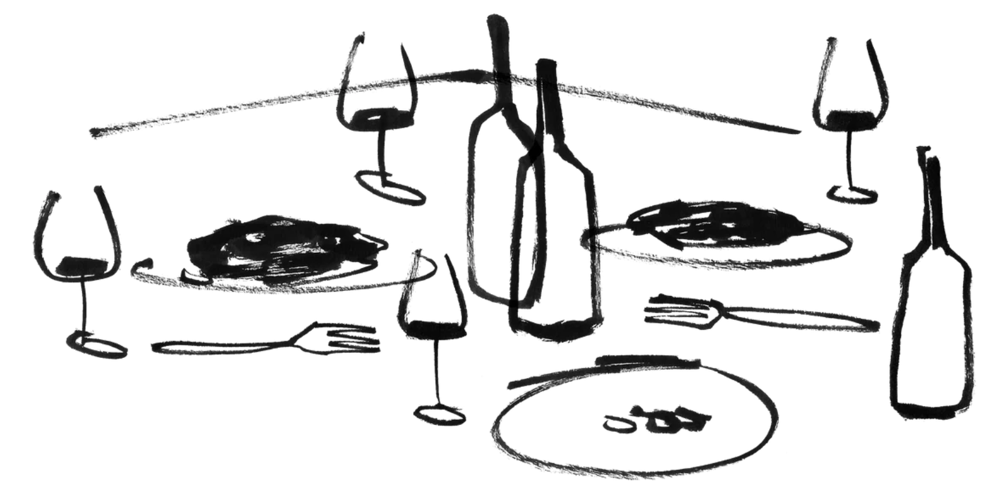

Sipping with the Seasons
How we complement our food with great wines.

Wine and food pairing is really a kind of quiet love story. Weight meets weight, a light dish finding a light wine, a rich plate finding one with more body — and neither ever asking the other to shrink. Sometimes they meet in harmony, flavors echoing each other softly; sometimes in contrast, a wine’s acidity cutting gently through richness like a whispered counterpoint. Even a wine and a dish born of the same soil seem to remember each other, the way old friends do. There’s no science strict enough to explain it fully — only the simple, romantic truth that when plate and glass are chosen with care, they don’t just sit beside each other. They fall into place.
Stay connected — new pairings landing here soon.